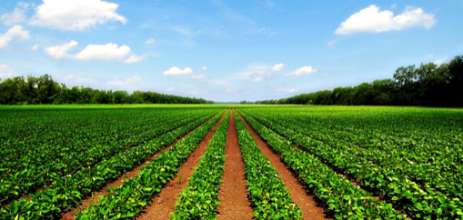

Soil loss is something that Californians should not take for granted. As we are learning in ESP 80, “soil is life”. Many of the products humans need to survival are sustained and made from soil, whether we realize it or not. Cotton that is needed to make clothes grows from a plant which needs to grow in soil. The food that is beautifully displayed in the grocery stores grows from plants that grow from soil. Many residents of California do not realize the impact of the building of new neighborhoods, giant mall complexes or a new hotel and the effects in has on the soil being used by farmers and agricultural peoples. There needs to be a greater consideration and thought process from development builders. Mapping areas that are not needed for agricultural growth would help save thousands of acres of fresh and organic soil that is used to produce many of the necessary items for the population of California. 
Recently, there has been a shortage in agricultural soil, especially in California. In a recent publishing by the Department of Conservation, irrigated farmland has “decreased by about 263 square miles from 2008-2010” (Brown, DOC). Urbanization has been a major cause of soil loss (irrigated farmland) in most recent years.
The building of homes, apartment complexes and many other man-made buildings continue to take important agricultural land. Long-term land idling was also another issue, which in some instances, is a greater threat to this land loss than modernization. Many companies look into mapping to make sure they are maintaining areas in which farming is vital to California. The DOC also stated that “[d]uring the 2008-2010 mapping cycle, nearly 70 square miles -- 44,504 acres – of land were converted to urban use, a 39 percent decrease relative to the 2006-2008 period. Thirteen percent of the new urbanization occurred in Riverside County (5,874 acres), including the largest single commercial development statewide, the 190-acre Sun City Shadow Hills community in Indio. San Diego and Los Angeles counties each added more than 4,000 acres of urbanized land, while Kern, Kings, and Fresno counties added more than 3,000 each. Included within the urban increases was community infrastructure such as water retention basins, which were a significant component of the conversion in southern San Joaquin Valley counties” (Grown, DOC).
With the improvements of mapping, development projects were able to scale down the size of the areas they are developing on. As the economy begins to get stronger after the recession, modernization with again begin to speed u, threatening the areas in which farming and agriculture must take place. Of California’s approximately 100 million acres of land, 43 million acres are used for agriculture. That is close to 50% of California’s land area. Another 27 million acres is used for cropland. This shows that the vast majority of land within the borders of California is used for some sort of agriculture or food growing. Much of this land is now being urbanized. The Williamson Act of 1965 is probably the most helpful act when it comes to farmland retention. It was intended to lift some pressure off of the farmland by reducing property taxes in exchange for an annually-renewing 10-year commitment not to develop that land. The average of development on these lands in California is about 40,000 acres a year. (Thompson, along with sources used by him). With the continuation of urbanization, the loss of this land will continue to grow, meaning that other factors will begin to impact the soil in these areas. California has continued to prosper even with this loss of farmland. However, it is still a concern with the continuation of development as the economy becomes more stable. Land that is used for fiber and food is very important for the continuation of sustaining life; this land cannot be built again; people are not making more of it.